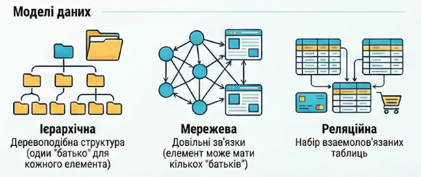
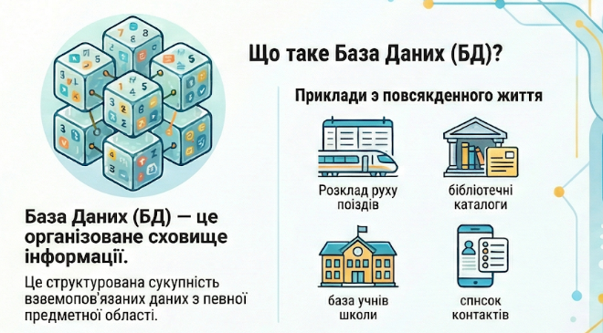

🎯 Мета: Формувати поняття про бази даних, СКБД, реляційну модель, модель «сутність-зв'язок»; пояснювати сутність атрибутів, ключів, зв'язків. Розвивати абстрактне мислення, вміння моделювати реальні об'єкти у вигляді таблиць і зв'язків між ними. Виховувати структурованість мислення, розуміння важливості цілісності даних, відповідальність за проектування.
🛠️ Обладнання: інструкційні картки
📚 Література: Холод О.М. (2019), Шумілова І.Ф. (2023), Юнчик В.Л. (2024)
1. Чи стикалися ви в школі з базами даних (електронний журнал, бібліотечний каталог)? Як вони організовані?
2. Чому для сучасної школи важливо використовувати бази даних, а не просто таблиці Excel?
3. Як ви вважаєте, які переваги має реляційна база даних перед хаотичним зберіганням інформації?
4. Наведіть приклади сутностей зі шкільного життя (учні, вчителі, класи, предмети). Як вони пов'язані між собою?
5. Чи може вчитель початкової школи самостійно створити базу даних для обліку учнів? Що для цього потрібно знати?
Модель даних – це сукупність правил, структур даних та обмежень, які визначають організацію, зберігання та маніпулювання даними в базі даних.

| Модель | Опис | Приклад |
|---|---|---|
| Ієрархічна | Дані у вигляді дерева (один батько – багато дітей) | Файлова система Windows |
| Мережева | Розширення ієрархічної (дитина може мати кількох батьків) | Телефонні мережі |
| Реляційна | Дані у вигляді двовимірних таблиць | MySQL, PostgreSQL, Access |
| Об'єктно-орієнтована | Дані та методи об'єднані в об'єкти | MongoDB |
| NoSQL | Не реляційні бази для великих даних | Cassandra, Redis |
База даних (Database, БД) – це організована сукупність структурованих даних, які зберігаються в електронному вигляді та призначені для багаторазового використання.

Основні властивості БД:
СКБД (DBMS) – це комплекс програмних засобів для створення, ведення та використання баз даних.
| Назва | Тип | Особливість |
|---|---|---|
| Microsoft Access | Настільна/реляційна | Входить до Microsoft Office, проста |
| MySQL | Серверна/реляційна | Безкоштовна, для веб-сайтів |
| PostgreSQL | Серверна/реляційна | Потужна, безкоштовна |
| SQLite | Вбудована | Легка, не потребує сервера |
| MongoDB | NoSQL/документна | Для великих даних |
| Oracle | Серверна/реляційна | Комерційна, для підприємств |
Реляційна модель – це модель даних, у якій всі дані представлені у вигляді двовимірних таблиць (відношень).
| Термін | Визначення | Аналогія |
|---|---|---|
| Відношення | Таблиця | Аркуш Excel |
| Кортеж | Рядок таблиці | Запис про одного учня |
| Атрибут | Стовпець таблиці | Поле «Прізвище» |
| Домен | Множина допустимих значень | Стать: чоловіча, жіноча |
| Первинний ключ | Унікальний ідентифікатор рядка | Код учня |
| Зовнішній ключ | Посилання на ключ іншої таблиці | Код класу в таблиці учнів |
ER-модель (Entity-Relationship model) – це спосіб графічного подання структури бази даних.
| Компонент | Позначення | Опис | Приклад |
|---|---|---|---|
| Сутність | Прямокутник | Об'єкт реального світу | Учень, Вчитель |
| Атрибут | Еліпс | Властивість сутності | Прізвище, Дата народження |
| Зв'язок | Ромб | Відношення між сутностями | Навчається, Викладає |
| Ключ | Підкреслений атрибут | Унікальний ідентифікатор | Код учня |
Типи зв'язків: 1:1 (один до одного), 1:M (один до багатьох), M:M (багато до багатьох).
Нормалізація – це процес організації даних для усунення надлишковості та забезпечення цілісності.
| Нормальна форма | Вимога |
|---|---|
| 1НФ | Усі атрибути є атомарними (неподільними) |
| 2НФ | Усі неключові атрибути залежать від повного ключа |
| 3НФ | Відсутні транзитивні залежності |
Приклад структури БД «Шкільний журнал»:
| Сутність | Атрибути |
|---|---|
| Учні | Код_учня (ключ), Прізвище, Ім'я, Дата_народження, Код_класу |
| Класи | Код_класу (ключ), Назва, Рік_навчання, Код_класного_керівника |
| Вчителі | Код_вчителя (ключ), Прізвище, Ім'я, Посада |
| Предмети | Код_предмета (ключ), Назва, Кількість_годин |
| Оцінки | Код_оцінки (ключ), Код_учня, Код_предмета, Оцінка, Дата |
Визначення сутностей та атрибутів: для предметних областей (бібліотека, магазин, готель) виділіть сутності та атрибути.
Проектування ER-діаграми: побудуйте ER-діаграму для шкільної системи (Учні, Вчителі, Предмети, Класи, Оцінки).
Порівняння БД та Excel: заповніть порівняльну таблицю.